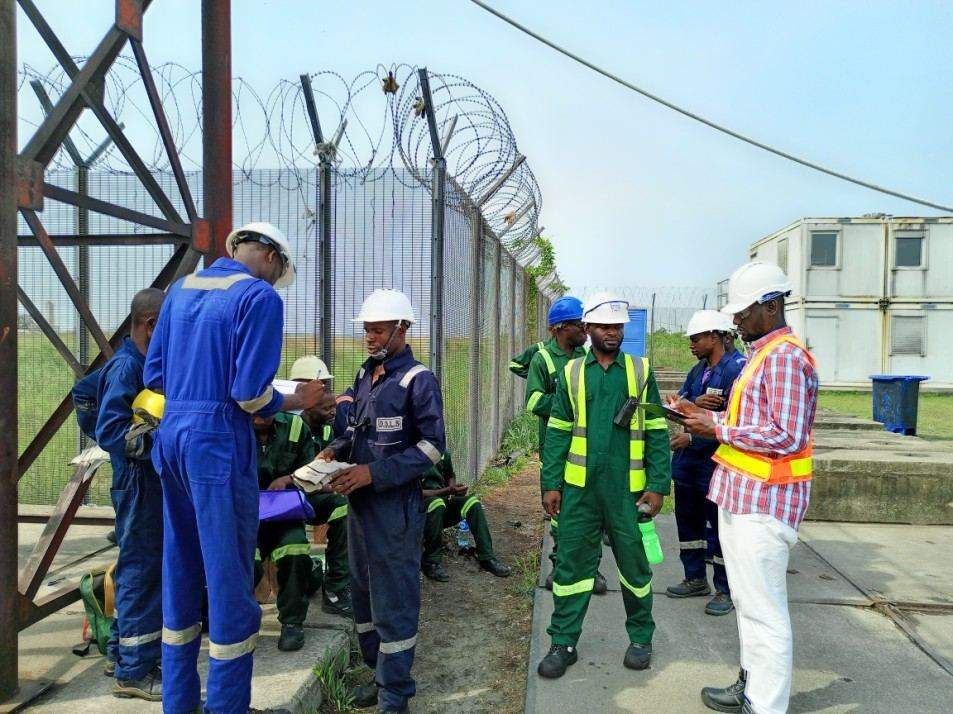

SAFETY & HSEQ
Every operation begins and ends safely
Handling heavy cargo and marine equipment is inherently high-risk. Sundance builds Health, Safety, Environment and Quality planning into every job — not as paperwork after the fact, but as part of how the operation is planned.
ZeroRecordable safety incidents to date
100%PPE and HSE supervision on active jobs
West AfricaRegional coverage
DailyToolbox talks and site checks

DOCUMENTATION
Documentation that protects everyone on the job
Quality assurance is on parallel with safety — every major lift or handling operation carries a method statement, risk assessment and job-specific HSE plan, checked before work begins.
- Method statements and risk assessments for every major lift or cargo operation
- Third-party equipment inspection and certification coordination
- Incident reporting and close-out tracking
ENVIRONMENT
Responsible operations, beyond the job site
We act responsibly toward people, communities and the environment — waste handling, spill prevention and site housekeeping are part of every job plan, not an afterthought.
Ask us about our HSEQ documentation
We’d be glad to walk prospective clients through our HSE plan, QA procedures and safety record.
Contact us